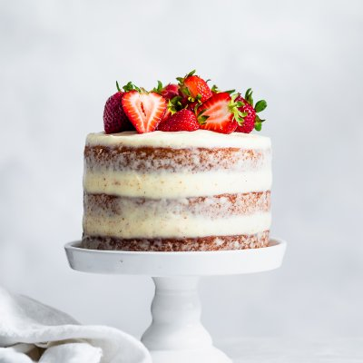

Sad Cake

Description
This cake is called sad cake because the cake looks sad.
It actually "falls" during baking and is a flat cake.
It may be sad looking, but it is moist, chewy, and sweet.
It does not need frosting.
Ingredients
- 2 cups biscuit baking mix
- 2 cups packed brown sugar
- 4 eggs
- ½ cup vegetable oil
- 1 cup flaked coconut
- 1 cup chopped pecans
- 1 teaspoon vanilla extract
Steps
-
Preheat the oven to 350 degrees F (175 degrees C).
Grease and flour one 9x13-inch pan.
-
Mix thoroughly together biscuit mix, brown sugar, eggs, oil, flaked coconut, chopped pecans, and vanilla.
Pour batter into the prepared pan.
-
Bake in the preheated oven for 35 to 40 minutes.
Allow cake to cool before cutting.